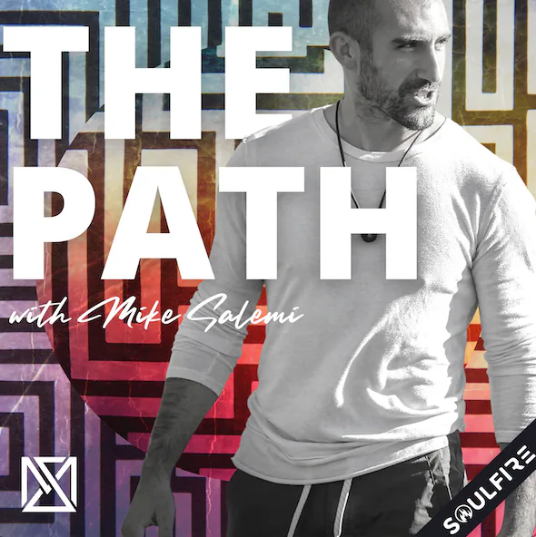

B844 · The Path Podcast is LIVE!
Hi {first_name},
The Path Podcast is LIVE!
While it’s been a long time coming, what has motivated me to bring this adventure to life is my commitment to serving you at the highest level possible, while growing myself simultaneously.
The podcast is a new way for me to share wisdom from the people I’ve learned from over the years, and bring them directly to you through heart-centered conversations.
The first two shows are up, check them out!
Here is a link to Apple.
Here is a link to Spotify.

If I could make a sincere request - if you could please subscribe, rate, and review the show that would be amazing. This is how I’ll be able to get more incredible guests on for you, and is HUGELY appreciated as we launch this puppy : )
With love and passion, Mike |